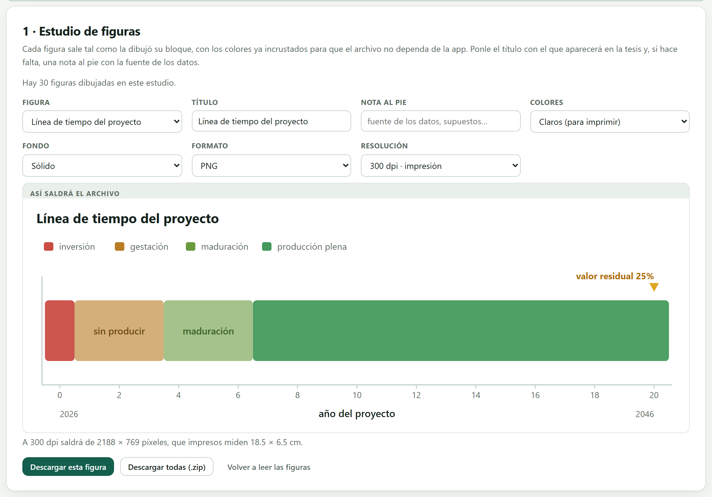
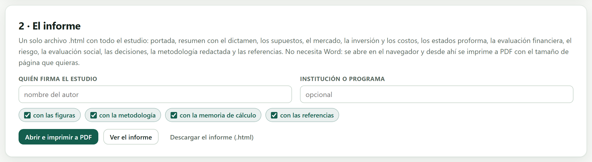
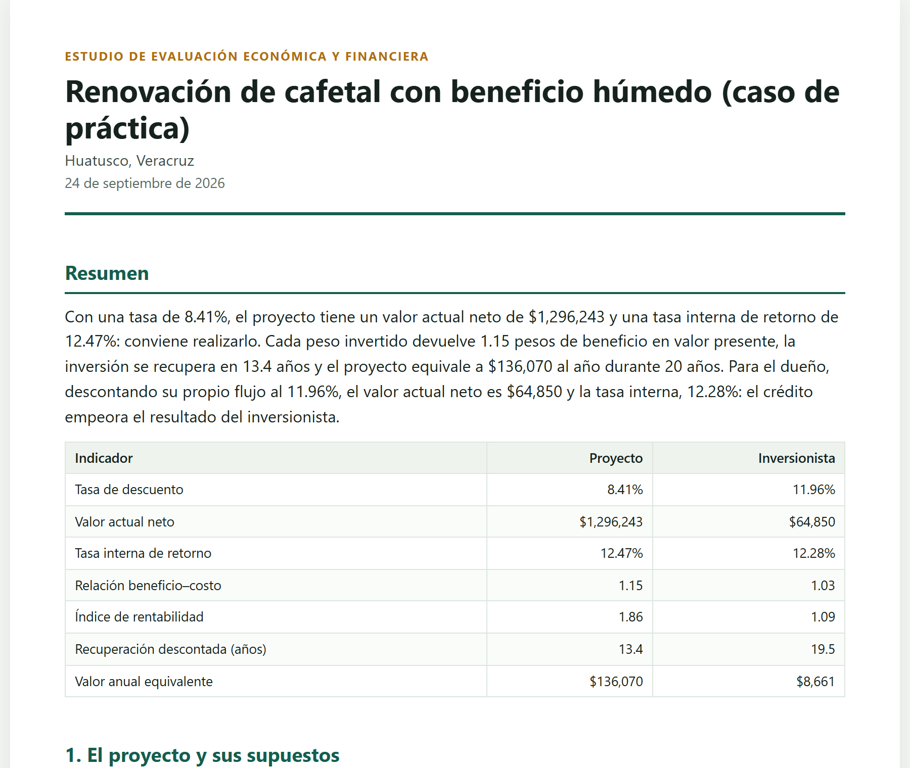
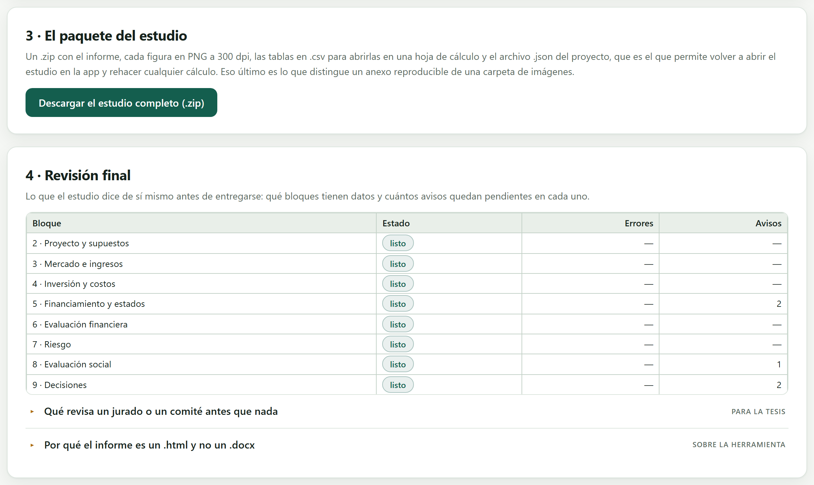

Este bloque no calcula nada nuevo: recoge lo que los nueve anteriores hicieron y lo convierte en cosas que se entregan. Cada figura sale como archivo publicable con su título y su resolución; todo el estudio sale como un informe de un solo archivo que se lee y se imprime sin Word ni internet; y el conjunto sale como un paquete .zip que incluye el archivo del proyecto, que es lo que permite a otra persona rehacer los cálculos en vez de solo leerlos.
Un estudio que solo existe dentro de una app no sirve para nada. Este bloque lo saca: en figuras que se pegan en una tesis, en un informe que se lee sin la app y en un paquete que otra persona puede abrir dentro de cinco años. Lo único que se escribe aquí es quién firma el estudio.
Lo que no hace es cambiar un solo número. Si algo no cuadra, se arregla en el bloque que lo produjo y este bloque lo vuelve a recoger. Tampoco escribe la tesis: entrega párrafos redactados que se pueden copiar, pero la redacción, el orden y las conclusiones son de quien firma.
El capítulo sigue usando el cafetal de Huatusco, ya completo hasta el Bloque 9 con las tres obras de riego cargadas.
La primera tarjeta toma cualquier figura que el estudio haya dibujado y la convierte en un archivo que ya no depende de la app.

En el cafetal completo la app dice: «Hay 30 figuras dibujadas en este estudio», de las 33 que trae el catálogo. Las tres que faltan no son un error: son las que necesitan una acción que nadie pidió.
| Figura ausente | Por qué |
|---|---|
| Análisis marginal (CIMMYT) | el estudio no comparó tratamientos en el Bloque 6 |
| Simulación de Monte Carlo | nadie pulsó Simular en el Bloque 7 |
| Qué explica la dispersión del VAN | la misma razón: sin simulación no hay dispersión que explicar |
Es decir: el catálogo no se rellena con figuras vacías. Si una figura debería estar y no aparece, es porque ese análisis no se hizo, y conviene volver a su bloque antes de entregar.
Dentro de la app, cada figura está dibujada con nombres de color —var(--primary), var(--leaf)— que la hoja de estilo resuelve al momento. Un archivo exportado así saldría en blanco y negro, o directamente en negro, porque fuera de la app esos nombres no significan nada.
Por eso, antes de escribir el archivo, la app sustituye cada nombre por su color real según el tema elegido. El resultado es un SVG o un PNG que se ve igual en Word, en LaTeX, en el navegador y dentro de diez años, sin la app y sin internet.
El título que se escriba aquí queda dentro de la imagen, y la nota al pie también. Eso importa cuando la figura viaja sola —en una presentación, en un correo, en un anexo— y nadie tiene alrededor el texto que la explicaba. La nota es el lugar para poner la fuente de los datos y el supuesto que haga falta.
Debajo de la vista previa, la app dice en una línea lo que casi nadie calcula y todas las revistas exigen.
«A 300 dpi saldrá de 2188 × 769 píxeles, que impresos miden 18.5 × 6.5 cm.»
La figura mide 700 × 246 puntos en pantalla. A 300 puntos por pulgada se multiplica por 3.125 —porque la pantalla trabaja a 96— y da 2188 × 769 píxeles; esos 2188 píxeles, impresos a 300 por pulgada, ocupan 7.3 pulgadas, que son 18.5 cm: justo el ancho de una caja de texto de tesis. Si la figura se imprimiera más chica, su resolución efectiva sería aún mayor; si se estirara al doble, bajaría a 150 dpi y se notaría.
| Formato | Cuándo |
|---|---|
| SVG | Es vectorial: no tiene resolución, se puede ampliar sin límite y el texto sigue siendo texto. Es el mejor archivo si la revista o la plantilla lo acepta, y el único que se puede seguir editando. |
| PNG | La opción segura. Lo abre todo, no pierde calidad al guardarse y admite fondo transparente. Es lo que va en el paquete .zip, a 300 dpi. |
| JPG | Solo si alguien lo exige. Comprime perdiendo información y en una gráfica de líneas y texto eso se nota como una suciedad alrededor de los trazos. |
La resolución queda escrita dentro del archivo —en un trozo pHYs si es PNG, en la cabecera JFIF si es JPG—, que es exactamente lo que lee un editor cuando pide «300 dpi» y lo que hace que la figura entre con el tamaño correcto en vez de gigante.
El selector de colores no cambia los datos ni las formas: cambia la paleta con la que se hornea el archivo. Los claros son para papel; los oscuros, para una diapositiva con fondo negro, donde una figura clara deslumbra. El fondo transparente sirve para montar la figura sobre el color de la plantilla, y el suave para que se distinga del papel sin encuadrarla.
La segunda tarjeta arma el estudio entero en un solo archivo .html, con cuatro partes que se pueden quitar.

Un .docx obligaría a instalar algo, se vería distinto en cada versión de Word y arrastraría las figuras como objetos que se mueven solos. El informe es un único archivo .html: pesa unos 269 KB en el cafetal, lleva las figuras dentro, se abre con doble clic en cualquier computadora del mundo y desde el navegador se imprime a PDF con el tamaño de página que se quiera.
Quien necesite Word tiene dos caminos: imprimir a PDF y anexarlo, o abrir el .html en Word, que lo importa con su formato. Lo que la app garantiza es que el informe no dependa de la app, y eso un .docx generado a medias no lo garantiza.
El informe empieza donde debe empezar un estudio: con el veredicto, no con la metodología.

| Portada y Resumen | el dictamen y los siete indicadores |
| 1. El proyecto y sus supuestos | Bloque 2 |
| 2. Mercado, precios e ingresos | Bloque 3 |
| 3. Inversión, costos y capital de trabajo | Bloque 4 |
| 4. Financiamiento y estados proforma | Bloque 5 |
| 5. Evaluación financiera | Bloque 6 |
| 6. Riesgo e incertidumbre | Bloque 7 |
| 7. Evaluación económica y social | Bloque 8 |
| 8. Comparación y decisiones | Bloque 9 |
| 9. Metodología | qué se hizo y con qué citas |
| Memoria de cálculo | cada fórmula con sus números sustituidos |
| Referencias y Cómo citar la herramienta | lo que cierra el documento |
Las secciones se numeran en el orden en que sobreviven. Si un bloque no tiene nada que reportar —por ejemplo, si solo hay una alternativa y no hay nada que comparar—, su sección no se escribe y las demás se recorren: el informe nunca sale con un hueco en la numeración.
Es la parte que distingue un informe de una hoja de resultados. En vez de decir que el VAN es $1,296,243, muestra la fórmula y la fórmula con los números puestos, para cada cálculo importante: la tasa de descuento, la tasa real de Fisher, la inversión inicial, el punto de equilibrio, el VAN término a término, la TIR, el valor anual equivalente y el puente al VAN económico.
Un ejemplo de cómo se ve un renglón:
Eso es lo que un jurado revisa cuando duda de un resultado, y lo que convierte una cifra en algo verificable.
La sección de metodología no es una plantilla vacía: describe el método que de hecho se usó en este estudio —qué método de proyección, qué modo de tasa, qué distribución en la simulación, qué factores de conversión— y cita a los autores correspondientes. Las referencias que aparecen al final son solo las que el estudio realmente usó.
La tercera tarjeta es un botón. Lo que baja es un .zip con cuatro cosas, y la cuarta es la importante.
Un anexo con figuras y tablas se puede leer; uno con el archivo del proyecto se puede rehacer. Quien reciba el paquete abre ese .json en el Bloque 2 de la app y recupera el estudio completo: puede cambiar un precio y ver qué pasa, comprobar una cuenta o partir de ahí para otro proyecto.
Eso es lo que separa un anexo reproducible de una carpeta de imágenes, y es lo que cada vez más comités y revistas piden. El LEEME.txt lo explica en diez renglones, para quien abra el .zip dentro de cinco años sin saber qué es.
Un .csv se abre en Excel, en LibreOffice, en R y en un editor de texto, y seguirá abriéndose cuando las versiones de hoy ya no existan. Las cinco tablas del paquete son las que un lector querrá revisar número por número: el programa de ventas, los costos, el estado de resultados, el flujo económico y las alternativas comparadas.
La última tarjeta es una lista de verificación que el estudio hace sobre sí mismo: qué bloques tienen datos y cuántos avisos quedan pendientes en cada uno.

«El estudio está completo y sin errores: ya se puede entregar.»
Debajo, la tabla dice dónde quedaron los avisos: 2 en el Bloque 5 (financiamiento y estados), 1 en el Bloque 8 (evaluación social, la tasa social mayor que la privada) y 2 en el Bloque 9 (horizontes distintos y el desacuerdo VAN–TIR). Ninguno es un error, y los tres capítulos anteriores explicaron qué decir de cada uno.
La app nunca bloquea la entrega por un aviso: no le corresponde decidir qué es aceptable en un estudio. Pero cada aviso señala exactamente el tipo de cosa que un lector cuidadoso pregunta en la defensa, y todos están redactados de forma que se puedan contestar con una frase en el texto. Entregar con avisos está bien; entregar sin haberlos leído, no.
| Si la revisión final marca algún error | entonces no se entrega: vuelve al bloque que lo señala y arréglalo. |
| Si quedan avisos | entonces léelos todos y contesta cada uno con una frase en el texto del estudio. |
| Si falta una figura que esperabas | entonces es que ese análisis no se hizo; vuelve a su bloque antes de exportar. |
| Si la tesis pide figuras a 300 dpi | entonces exporta en PNG a 300 y comprueba el tamaño impreso que dice la app. |
| Si el anexo tiene que ser reproducible | entonces entrega el .zip completo, con el proyecto.json dentro. |
| Si vas a publicar | entonces copia la cita de la herramienta que el propio informe trae al final. |
Con esto se cierran los diez bloques. Lo que sigue en el manual son los apéndices: los formatos de archivo que la app lee y escribe, las reglas de decisión reunidas, el glosario, qué hacer cuando algo no sale y las referencias.